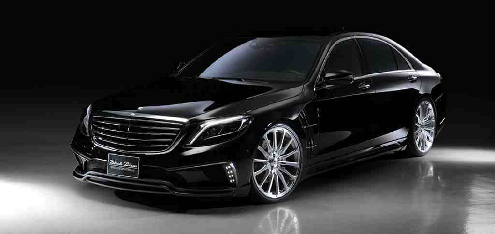
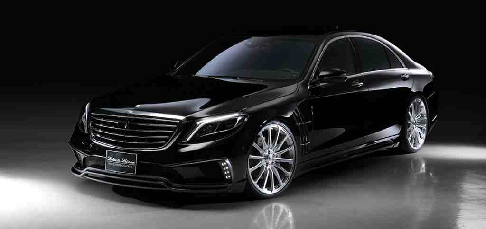

Mercedes-Benz CLS63 : Whenever you add the letters "AMG" to a Mercedes model, you are sure to get breathtaking performance, and the CLS63 AMG is no exception. As the high-horsepower version of Mercedes "four-door coupe," it offers stylish lines with room for four. Under the hood is a 5.5-liter twin-turbo V-8 that makes a beastly 577 hp and 590 lb-ft with a seven-speed automatic. All-wheel drive (4MATIC) is standard, as is an adaptive sport suspension. Note: This model replaces the Mercedes-Benz version
Mercedes-Benz S63 : Behold these Teutonic chariots that mix sumptuous luxury with earth-shaking power. Huge front air intakes, big wheels, and quad tailpipes hint at the powertrains: The S63 has a 577-hp twin-turbo V-8 with all-wheel drive; the S65 wields a 621-hp twin-turbo V-12 that sends 738 lb-ft to the rear wheels. The cabins are awash in leather and carbon fiber. There's a sedan if you need four doors; the coupe is one of the most beautiful cars around. Note: These models replace the Mercedes-Benz versions
Mercedes-Benz AMG GT : While gullwings are no longer part of the design, the Mercedes-AMG GT S is still set to swoop in and snag buyers away from its archnemesis, the Porsche 911. There are two models. First is the GT S, with a 503-hp 4.0-liter twin-turbo V-8 and a seven-speed automatic; it has a 0-60-mph time of 3.0 seconds and a top speed of 193 mph. A second model, the milder GT with 456 hp, debuts later. With a hatchback design, you could almost argue this is a sports car that's practical.